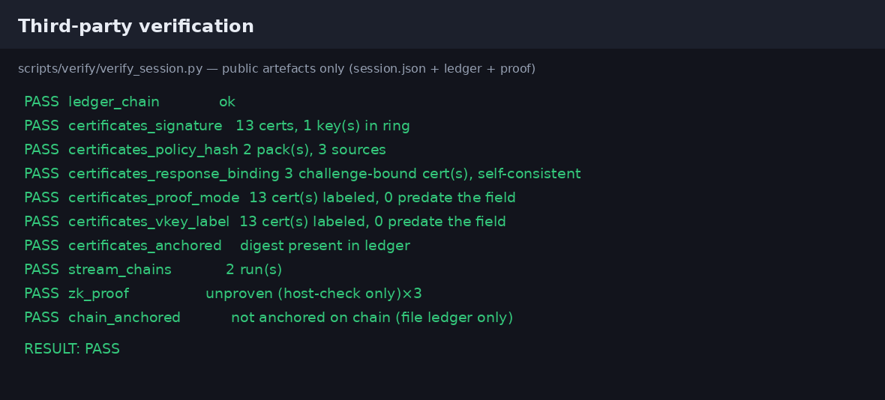
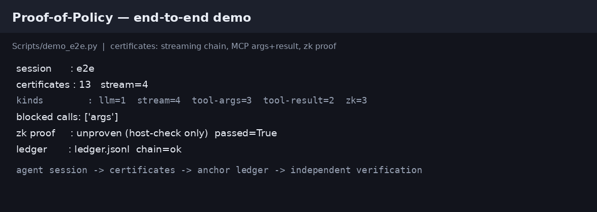

为 LLM agent 的响应提供策略零知识证明：证明「响应 T 满足公开策略 π」，
而违规内容只以证据承诺披露 —— 不依赖 TEE，可链上锚定，可被第三方仅凭公开产物独立复核。
汇报脉络：任务目标 → 进度 → 设计思路与实现（含框架图）→ 系统流程 → 模块耦合 → 可切换的模式与状态 → 创新点 → 未完成 → 未来落地
T，产出一份
验证方自己算得出来的证据：「T 满足 π」——
结论公开、违规内容不公开、无硬件信任。T 一定是那个 LLM 算出来的」（代理 MLP 除外，且如实标注）| 交付判据（怎么算做完了） | 判据形态 | 现状 |
|---|---|---|
| 端到端支路可跑 | bash scripts/demo/demo_all.sh 无 FAIL、SKIP 集合不变 | 8/8 通过 |
| 第三方能独立复算 | verify_session.py 只用公开产物 → RESULT: PASS | 10/10 检查 |
| 两层判定一致 | 跨语言对拍 Python↔Rust 逐点相同（CI rust job） | 19/19 |
| 真出证能过 | regression_prove.py --label … 出证腿 + 验证腿双 PASS | 5 次留痕 |
| 换证明模式也能出证 | compressed/groth16/plonk 真证明 + 链上验证合约 | 卡在本机内存（T1） groth16/plonk + 链上验证需 ≥64 GB，compressed 需 ≥16 GB —— 本机 11.7 GiB 两档都装不下 |
verify_session.py 只用公开产物复算全部结论 —— 签名、策略指纹、
响应绑定、轨迹绑定、锚定、流式链、ZK 证明 —— 10 项全 PASS，13 张证书。core/compressed
证明本身非零知识。这条是自己查出来并写进标题的。实时护栏。出证按分钟计，定位是离线审计 / 报送 / 批量合规核查。
| 模块 | 状态 | 做到哪 / 缺什么 |
|---|---|---|
| 策略 DSL 与编译 | 完成 | 8 类规则；编译期 fail-fast 语法子集闸门；跨语言对拍 19/19 |
| 运行时插桩（4 个适配器） | 完成 | LangChain / LangGraph / MCP / 通用，均按真会话路径实测 |
| 证书与账本 | 完成 | DSSE 信封 + Ed25519；链式防篡改账本；verify_cert.py 逐项 PASS |
| SP1 核心证明 | 完成 | 19 向量真出证，5 次留痕 vkey_hash/proof_bytes 全同 |
| 工具轨迹绑定 | 完成 | 回执链 + ToolSeal；工具回调 fail-closed 已落地 |
| 组合 / 会话 / 多方证明 | 完成 | 三条支路各自跑通；推理半是代理 MLP（非真实 LLM） |
| 语义规则（ezkl） | 部分 | 公开模式已通；私有模式不支持；随包是演示用小模型 |
| 链上锚定 | 部分 | 本地 Anvil 端到端跑通；未接公共测试网/主网，合约里没有证明验证 |
| groth16 / plonk 真证明 | 未做 | 本机 compressed 峰值 11.0 GB、groth16 峰值 11.07 GB 均 OOM（= T1） |
| 定时回归（T3） | 未做 | cron/systemd 配方已写进文档，但没有任何机器挂着它 |
| 生产化 | 未做 | 私钥 HSM/KMS 托管、服务 TLS、细粒度权限都没有 |
| demo 视频（里程碑 m3） | 未交付 | 如实记为未交付，改由一键 demo + 截图替代 |
状态口径：完成 = 有可复现的判据且已通过；部分 = 主路通但边界明确未覆盖；未做/未交付 = 有登记、有归口，但产物不存在。表中 T1 = 唯一的外部阻塞：groth16/plonk 真出证 + 链上验证合约测通需一台 ≥64 GB 云机（compressed 只需 ≥16 GB —— 本机 11.7 GiB 两个都装不下）；T3 = 定时回归，需一台常驻机器。
| # | 不解决会怎样（问题） | 于是只能这么做（决定） | 落在框架图的哪一层 |
|---|---|---|---|
| 1 | 「我们合规」只有运营方一张嘴，验证方无法复核 | 让验证方自己算得出来：判定结果必须是可复算的公开产物 | 产物层 · 验证层 |
| 2 | 可复算要求交出内容，与内容隐私直接相抵 | 让判定在不暴露响应 T 的前提下完成；信任根从硬件换成 zkVM 健全性 + 哈希 | 证明层 |
| 3 | 「护栏代码被执行过」推不出「输出合规」 | 证性质（T 满足 π），不证执行；公开值是 passed / violations / policy_hash | 证明层 |
| 4 | 只判一条响应，前面和后面发生的事都不在证据里 | 判整条会话链：工具调用由网关签回执，会话末端再签承诺，轨迹不能自报、不能被截尾 | 运行时层 · 产物层 |
| 5 | 出证比验证贵约 4 个数量级，全塞进请求路径就没人用 | 拆两个时间尺度（在线宿主校验 / 离线真证明），且一开始就写明哪张证书附了证明 | 证明层 · 产物层 |
| 6 | 「判不了」与「判过且干净」在产物上同形 | fail-closed：判不了也为这条回执出证，并判为不通过 | 产物层 |
| 7 | 同一个判定在 Python 与 Rust 各写一遍，必然漂移 | 层间只签一份合同，一致性交给机器对拍而不是靠人复查 | 契约层 |
π」之后 —— 策略层是前提，不是结论。
右列合起来正好覆盖框架图的六层：策略层是输入，契约层、运行时层、产物层、证明层是出证侧，验证层是第三方。
下一页的框架图，就是这 7 条同时成立时的形状。passed / violations / policy_hash…，不是「某段代码跑过」的日志。passed 含义是「会话进行到这次调用为止一直合规」。保守取侧：一张写 passed=True 的证书绝不该出现在一条脏轨迹上。passed=false 的证书 + 顶层 judgment 块。沉默与「干净」在产物上同形，那正是要消灭的歧义。ConstraintSpec 一个接口，其余各自实现、用对拍保证一致。>）= 同一层的数据流，方框彼此并列；
带间向下（∨）= 上一层产出交给下一层，流程推进。ConstraintSpec 同时约束两端（右侧虚线）：验证方拿公开产物现场重编译，得到的 policy_hash 必须与电路公开值里的那个逐字节相同。policy_packs/*.jsonConstraintSpec —— 层间唯一契约ToolSealcert.jsonledger.jsonlproof.binRESULT: PASS| # | 支路 | 驱动 | 状态 |
|---|---|---|---|
| ① | 公开模式主干：流式（含早停）+ MCP 工具 + 真 SP1 证明 + 挑战绑定 + 公私对比 + 账本 | demo/demo_e2e.py | 已跑通 |
| ② | 私有模式：响应承诺 + 逐违规证据承诺 + 脱敏证明 + 证据开示 | demo/private_demo.py | 已跑通 |
| ③ | 语义规则：ezkl 陪伴证明，验证方与 SP1 结论合取 | prove/ezkl_prove.py | 已跑通 |
| ④ | 组合证明：策略半 ∧ 推理半，两个 vkey（键分离） | prove/compose_proof.py | 已跑通 |
| ⑤ | 会话聚合：一组证书的 Merkle 根 + 三条义务 | prove/prove_session.py | 已跑通 |
| ⑥ | 多证明者：按规则类切三段，各角色自证自签 | prove/prove_multiparty.py | 已跑通 |
| ⑦ | 链上锚定：起 Anvil → 部署 Anchor.sol → 摘要上链 | anchor/anchor_e2e.sh | 已跑通 |
| ⑧ | 第三方独立验证：只用公开产物复算全部结论 | verify/verify_session.py | 已跑通 |
bash scripts/demo/demo_all.sh（宿主校验，约半分钟）
真证明
--prove（本机实测 22.6 分钟，峰值 ~10 GB）
core 谁也不认识| 层 | 目录 | 职责 | 它依赖谁 |
|---|---|---|---|
| ⑤ 脚本 / 服务 | scripts/ | 八条支路的驱动、证明服务、回归编排 | 以下全部 |
| ④ 适配器 | policydsl/adapters/ | 把真实框架的回调转成判定与出证 | evidence · core |
| ③ 证据 | policydsl/evidence/ | 证书 / 回执链 / 密钥 / 账本 / 隐私承诺 | core · 密码学库 |
| ② 核心 | policydsl/core/ | 策略模型、编译器、判定引擎、正则子集 | 标准库 |
| ① 电路 | circuits/ | 三个 SP1 guest + NFA 的 Rust 实现 | 只吃 ConstraintSpec |
core 零外部依赖 ⇒ 判定引擎可以在任何机器上跑，CI 的 tests job 因此不需要装任何东西，判据只有一份。test_layering.py 直接检查依赖方向；test_frontdoor.py、test_doc_links.py（47 份文档 / 291 条链接 / 悬空 0）各守一面。ConstraintSpec。四个域分隔符（pop-trace-v1 / pop-bind-v1 / pop-infer-v1 / pop-session-node-v1）有一条测试逐字节比对两侧字面量，且它不需要 Rust 工具链。ConstraintSpec：策略 → 约束spec_version / policy_id / policy_version / semantic /
constraints[] / sha256。sha256 只作用于规范化 JSON 文本（description 不进哈希）—— 它就是
policy_hash 的来源，也是三方比对的基础：出证方、验证方、电路公开值，
三方现场重编译必须得到同一个值。
outcome 与顶层不是一层outcome 只放电路公开值的镜像：公开模式为
{passed, violations, policy_hash, response_binding, trace_root, delegated}。trace_seal、ai_act、binding、error、judgment
一律在顶层 —— 因为电路里没有这些字段。outcome，会让「证明过的」与「没证明的」看起来一样。
| 名字 | 定义 | 绑什么 |
|---|---|---|
response_binding | SHA256("pop-bind-v1" ‖ u32be(len(nonce)) ‖ nonce ‖ T) | 绑到这一条响应，防调包 |
trace_root | 回执链末条回执的摘要（链起于 TRACE_GENESIS） | 绑整条工具轨迹 |
policy_hash | 策略包规范化 JSON 的 sha256 | 绑策略版本 |
| 规则类 | 判什么 | 在哪判 |
|---|---|---|
keyword_block | 字面命中禁用词 | 电路内 |
normalized_keyword_block | 归一化后命中（大小写/全角/变体） | 电路内 |
length_bound | 长度上下界 | 电路内 |
pattern_block | 正则子集（PII / 密钥 / 注入式样） | 电路内 |
format_check | 格式合规（规范子集，确定性） | 电路内 |
tool_arg_guard | 工具参数（判的是回执） | 电路内 |
budget_bound | 调用次数 / 预算 | 电路内 |
semantic_bound | 语义（主题级） | 委托 ezkl |
core/evaluate.py）与 Rust（circuits/）各写一遍，
CI 的 rust job 逐点比。基线落在 tests/acceptance_baseline.json（七面）与
loader_parity_baseline.json，比对结果 exit 0/2/3 分档。语义规则的 passed=true 不等于策略被满足：验证脚本因此打印两行
（RESULT: 与 合规:），且只支持公开模式。
ToolReceipt{seq, tool, args, result_digest, ts, prev, keyid, sig}，
prev 把前一条的摘要串进来 —— 「链」这个结构本身就是承诺。trace_unbound fail-closedToolSeal{count, trace_root, ts, keyid, sig} 拦 —— 删掉链尾那条违规回执，前缀依然合法，只有条数/根比对拦得住| 验证方能看到 | 公开 | 私有 |
|---|---|---|
passed / policy_hash | 相同 | 相同 |
| 命中了哪几条规则 | 相同 | 相同 |
| 每条规则的证据 | 明文（命中词、连密钥正则一起照抄） | 证据承诺 + 脱敏见证 |
| 响应本身的承诺 | — | 有 |
保证的是「公开值不含明文」，不是「内容不可恢复」。
| 可切的东西 | 取值 | 怎么切 | 切了会怎样 |
|---|---|---|---|
| 隐私模式 | public / private | AgentMonitor(policy, mode=…) · --mode | 违规证据：明文 ↔ 证据承诺；私有另加响应绑定。判定结果不变 |
| 证明模式 | unproven / core / compressed / groth16 / plonk | --prove · --proof-mode | 写进 binding.vkey_hash + proof_mode；后两者本机出不了（T1） |
| 模型 | 离线桩 / 真 provider | --model openai:<m> / 不传 | 不传就打印 llm model: fake (offline) —— 如实标注，含糊不得 |
| 早停 | 软停 / 硬停 | stop_on_violation · hard_stop | 硬停真的掐断传输（抛 EarlyStop），被掐断那次没有 on_llm_end ⇒ 只有停止证书 |
| 判定口径 | 整链 / 单条 | chain=gateway.receipts / 新建网关 | 决定工具证书 passed 的含义：会话至今合规 ↔ 本次调用干净 |
| 语义规则 | 开 / 关 | 策略包里有没有 semantic_bound | 开则走 ezkl 陪伴证明；流式路径会抛 NotImplementedError（未做） |
| 账本 / 链上 | 只落账本 / 同时上链 | --rpc · --contract · --private-key | 不上链也能验证，只是少了「第三方时间戳」这一层 |
| 服务并发 | --concurrency / --max-queue | 启动参数（缺省 1 / 8） | 不是策略是硬事实：~10.15 GiB 地板 ⇒ 同时跑两个是 OOM；队列满返 429 |
| 服务鉴权 | 无 / token / --require-auth | --auth-token · --auth-file · --auth-admin | 没配就照常起，但 /v1/health 如实写 auth: none。权限只有二元开关（未做细粒度） |
| 服务预检 | 只宿主校验 / 真出证 | --host-check | 几秒完成并如实标 proof_mode=unproven，用来验队列机制本身 |
| 结果留痕 | 追加写 | regression_prove.py --label … | regression-prove.jsonl 只追加不覆盖，任何一腿 FAIL 即非零退出 |
# ① 隐私模式：一次会话选一次 # 判定结果必须相同，不同的只是「你看见什么」 monitor = AgentMonitor(policy, mode="private") # └ public | private # ② 生成路径：挑战值 + 整条回执链 + 会话末端承诺 # 三者一起进证书；seal 落在载荷**顶层** cert = monitor.on_generate(resp, nonce=nonce, receipts=gw.receipts, seal=gw.seal(), vkey_hash=vk, proof_mode="core") # ③ 工具路径：判的是网关**执行后**签发的真回执 # 不是 agent 自报的 {name, args} cert = monitor.on_tool_call(receipt, chain=gw.receipts, seal=gw.seal()) # ④ 判定做不了（fail-closed）：仍然出证 # passed=False + 顶层 judgment 块 # {"performed": false, "type": …, # "message_sha256": …} —— 不留孤儿回执
# 演示：换模型 / 换模式 / 加挑战绑定 python3 scripts/demo/demo_e2e.py \ --model openai:deepseek-v4-pro \ --prove --proof-mode core \ --nonce <hex> --contrast-prove # 证明服务：并发、队列、鉴权、锚定 python3 scripts/ops/proof_service.py \ --concurrency 1 --max-queue 8 \ --mode private --proof-mode core \ --require-auth --rpc $RPC --contract $ADDR
trace_seal 卡直接判 FAIL。没有它就无法排除截尾，所以不兜底unknown，不做「未知即安全」的默认 —— 那正是隐藏程度表要防的错误| 想改什么 | 改哪儿 | 代价 |
|---|---|---|
| 调策略（换禁用词、改长度、加正则） | 直接改 policy_packs/*.json，重编译即换 policy_hash | 极小不改代码 |
| 接一个新框架 | 实现两个回调 + 一会话一把 ToolGateway（照 GenericGuard 抄） | 小加一个适配器文件 |
| 换签名算法 | 实现 cert.Signer 协议（sign / keyid / public_key） | 小证书其余部分不动 |
| 换锚定后端 | evidence/ledger.py 的写入端 / 换一个同类 Anchor.sol | 小 |
| 加一类规则 | core/model.py 加 kind + evaluate.py 实现 + 电路侧 pop-program + 更新两条对拍基线 | 中必须同时动 Python 与 Rust |
| 换语义模型 | semantic/ 的模型与 training_report.json；encode 须保持单射 | 中需真实数据集与更大模型 |
| 换证明系统 | 电路在 circuits/（三个 guest 入口）；proof_mode 已预留 groth16/plonk | 大需 ≥64 GB 机器（T1） |
| 换判定语言/运行时 | NG | 不在设计内zkVM 内跑通用运行时与本方案的规模假设冲突 |
「加一类规则」是唯一必须跨层改的扩展点：它不是缺陷，而是「电路内判定」这个选择本身的代价。 项目用对拍基线 + fail-fast 语法闸门把这份代价压到「改了必须留证据」，而不是「改了看不出来」。
$ bash scripts/demo/demo_all.sh # 8 条支路，约半分钟 $ bash scripts/demo/demo_all.sh --prove # 真证明 22.6 分钟 $ python3 scripts/verify/verify_session.py \ --session scripts/examples/out/e2e/session.json RESULT: PASS 13 张证书 · 10 项检查
--model openai:<model> 走真 provider；不传参数时用离线桩，终端
如实打印 llm model: fake (offline) ——
始终真实的是 callback 管线，不是模型。

zk proof : unproven (host-check only) —— 没附真证明时证书就这么标，
不留「看起来验过了」的空间。docs/quadrant.md：纵轴＝证性质成立还是护栏执行过，横轴＝信任来自密码学还是硬件/人工；
「密码学健全 × 证性质」这一格此前为空，本项目落在该格。a×n 对正则 a+b）下朴素实现 vs Pike VM| n | Pike | 朴素 | 比值 |
|---|---|---|---|
| 100 | 643,894 | 12,382,720 | 19.2× |
| 200 | 1,145,209 | 48,638,946 | 42.5× |
| 400 | 2,143,617 | 193,207,130 | 90.1× |
本项目不主张「更快」，主张的是：对「合规」这条义务，在不涉及模型的前提下， 以同量级时间、更小内存完成，并补上承诺式隐私。
cert_version/ts；
policy_hash + binding{vkey_hash, proof_sha256, proof_mode} 绑定策略版本与电路；
证书摘要入防篡改账本；粒度为单次响应 / 单次工具调用mode/outcome 告知内容是否公开、是否合规；
验证方可独立复算；私有模式只公开承诺ai_act 块把义务逐条落到字段；
文档明确标注这是工程映射、非法律意见，训练数据 / 模型卡（Art.11）明确记为超出范围。pop-verify 让验证方不需要构建 prover 即可验证（审计路径）serviceable:false）Anchor.sol + 本地 Anvil 一键端到端（first-write-wins，部署不需要 solc）| 问题 | 现状与影响 | 出路 |
|---|---|---|
| ① 私有模式的隐私上界 上界明确 |
只保证「公开值不含明文」。两个独立理由：SP1 core/compressed 证明非零知识（官方安全模型明文 + 本机源码审计）；更根本地，「响应绑定」与「内容隐藏」对低熵 T 互斥 —— 公开值里的承诺可离线枚举猜测-验证，与证明系统无关 |
要「不可恢复」须换零知识证明系统（groth16/plonk 隐藏见证）：本机内存不够，仅设计上可行、未实测 |
| ② 内存天花板 外部阻塞 |
prover 固定地板 ~10.15 GiB：最小配置（200 字符 × 1 规则）就已 10.39 GiB。本机 11.7 GiB 下，3 规则 × 200 字符、1 规则 × 20k 字符均被 OOM 杀；可行域呈「两级台阶」。它的直接后果就是 T1 | 换 ≥16 GB 机器出 compressed；groth16/plonk 需 ≥64 GB（即 T1）。已把「OOM 判据」写成测试（复刻被杀时的无输出无末行） |
| ③ 组合证明的推理半是代理 部分完成 |
pop-infer 是确定性定点 MLP，不是真实 LLM 的推理证明；且「组合成本由推理主导」在代理规模下不成立（如实写进评测） |
需要真实模型的推理证明（zkAgent 方向），其源码不可得 —— 属另一条工作线 |
| ④ 语义规则的三条硬边界 部分完成 |
① passed=true 且 delegated 非空的证明不等于策略被满足（验证脚本因此打印两行：RESULT: 与 合规:）；② 只支持公开模式（encode 在词表上单射，可反查原文）；③ 随包模型是演示用小模型（留出集 acc 0.99 / n=100），不构成语义安全保证 |
换更强的私有语义证明路线；模型侧需要真实数据集与更大模型 |
完整 10 条（另 6 条：文档数字漂移、登记在案未销案等）见 docs/report/advisor-report.md §9。
801/15 一次性回填到五处，并把「五处同步」做成自动化检查--stub 路径改走 effective_base()，消掉两套取法verify_cert.py 增一张卡，专门标出 judgment.performed=false 的证书semantic_bound 策略包的流式路径groth16/plonk 真出证 + 链上验证合约测通（顺带用 ≥16 GB 档把 compressed 全矩阵补齐；唯一挡在收尾前的任务）pop-infer 的代理 MLP这一页与第 21 页是同一批事实的两种切法：那里按「问题」列，这里按「还需要什么才能推进」列。